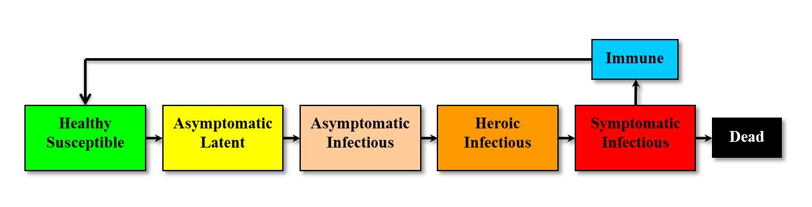

Our infection module was the first major simulation component to be completed. It allows us to simulate the spread and progress of a single infectious agent through the population.
It was initially used to model the spread of influenza as part of our Royal Naval School influenza case study. It works through the use of a relatively simple, though novel, infection model called SLASHR.

The module simulates infection spread via close physical contact and tracks the progress of the infection from initial infection to either recovery or death. It also incorporates time-dependent isolation and the related concept of "hero time".
Isolation simulates the segregation of symptomatic individuals from the remainder of the population. Time-dependence is used to ensure that peeps are not isolated at nonsensical times. In the case of the RNS, consider that a student becoming symptomatic during the night is unlikely to be instantaneously isolated; it is more likely that their symptoms will only be noticed and acted upon in the morning.
Related to this is "hero time"; this approximates the common behaviour of people whereby they will ignore or even conceal symptoms of sickness due to perceived unimportance. This concealment is factored into a peep's chance of being isolated at any given moment; at the beginning of hero time, a peep has a zero percent chance of being "detected". This increases linearly to the end of hero time, at which point the peep has a 100% chance to be detected.
The infection module also provides functionality to control the spread of infections based on masking. This allows the population to be divided into different groups which may only infect a specific set of groups. This can be used to implement diseases such as Schistosomiasis.